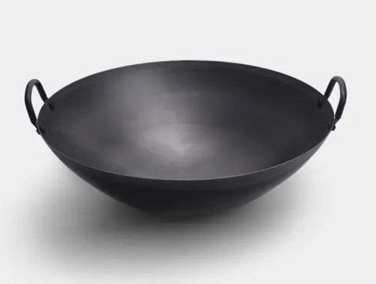
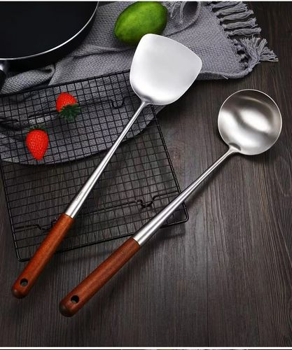
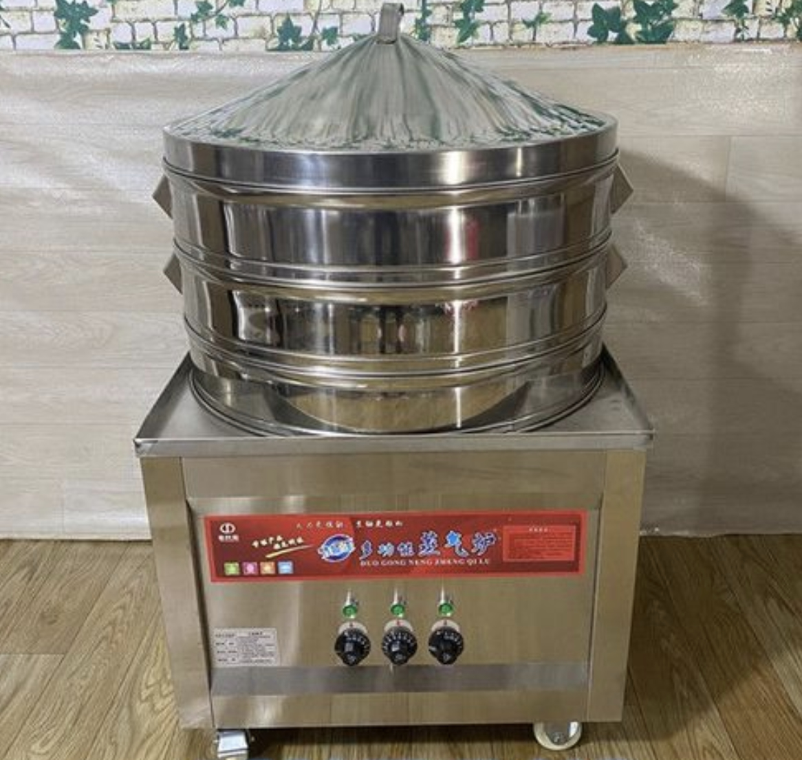
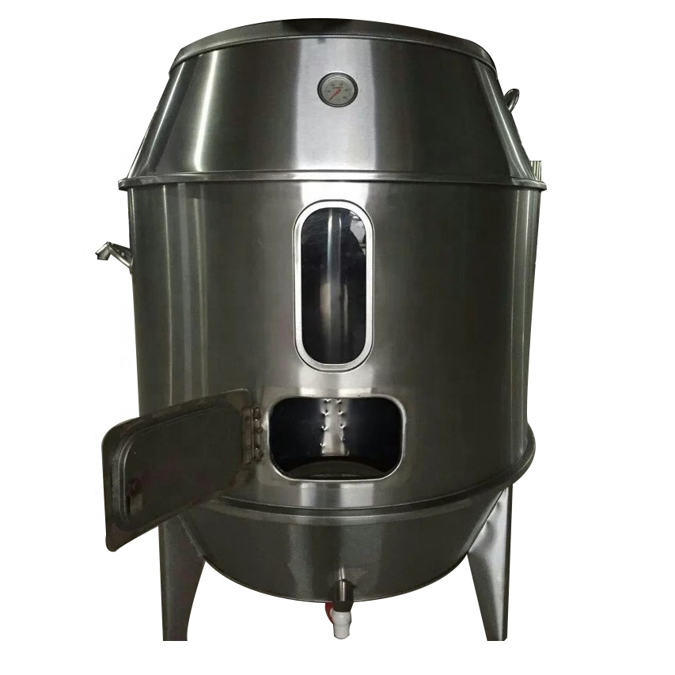
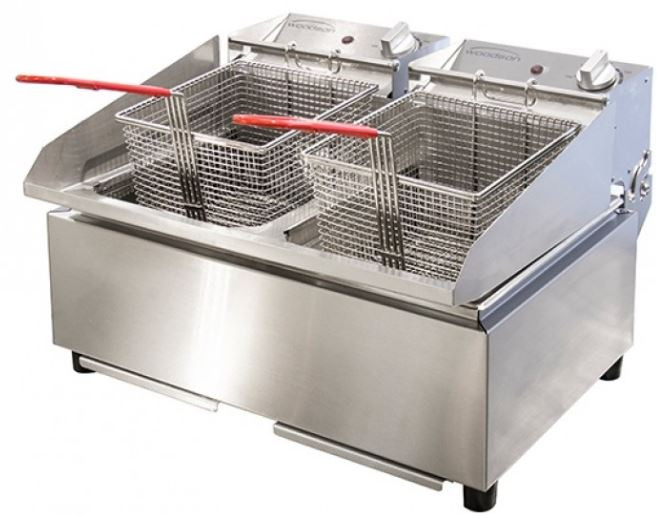
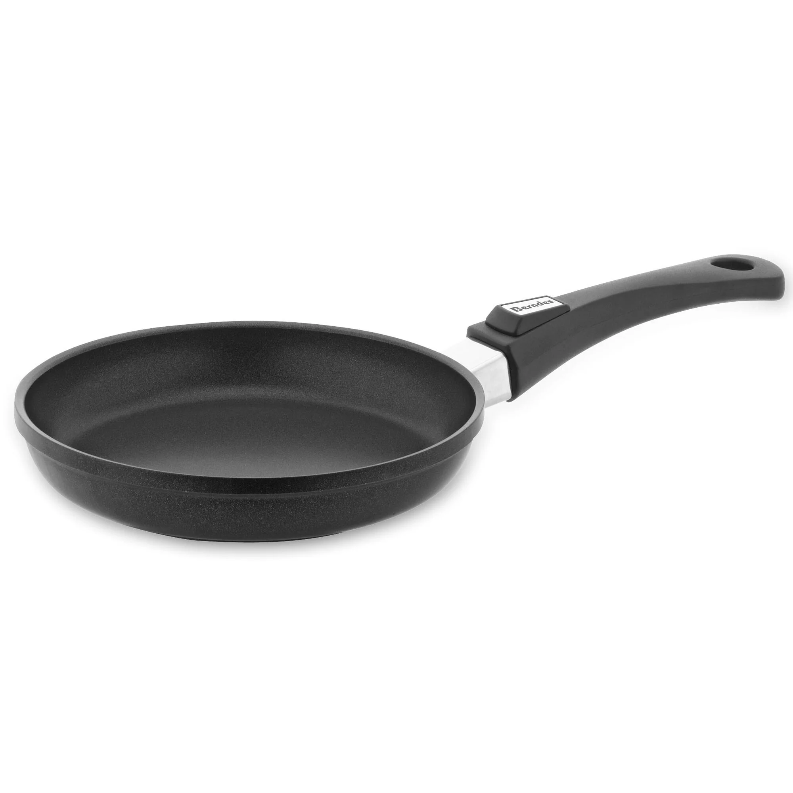

Kitchenware
There are some examples of kitchenware for a Cantonese style commercial kitchen needs :
- Wok
A wok is made of carbon steel and cast iron. Usually use for stir-fry, deep-fry,or even steam.
- Wok Spatula and ladle
The wok Spatula and ladle are used for wok, usually made of metal. The design of long handle is for keeping chef away from the heat by stove.
- Steamer
The steamer works by boiling water at the bottom and allow the steam to pass through the holes in the tray to heat up the ingredients.
- Oven
The oven is typically used for Chinese-style roasting, such as roasting duck or barbecue pork. The ingredients are hung inside the oven and roasted evenly.
- Deep Fryer
A deep fryer used for cooking ingredients quickly and evenly to get crispy and flavorful dishes like Sweet and sour pork, crispy chicken.
- Pan
When the dish require heat evenly over a large surface like omelette, or slow frying like chicken wings, chefs will use pan instead of wok to cook it.